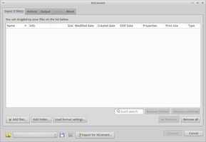

XnConvert
Dieser Artikel wurde für die folgenden Ubuntu-Versionen getestet:
Ubuntu 16.04 Xenial Xerus
Ubuntu 14.04 Trusty Tahr
Zum Verständnis dieses Artikels sind folgende Seiten hilfreich:
XnConvert  ist ein einfacher und schneller Bildkonverter für Grafikdateien wie Fotos und Bilder. Dem Benutzer stehen eine Reihe von Funktionen zur Verfügung, um das Bildmaterial zu verändern. So kann dieses z.B. automatisch zugeschnitten und/oder gespiegelt werden. Das Programm unterstützt ca. 500 Grafikformate
ist ein einfacher und schneller Bildkonverter für Grafikdateien wie Fotos und Bilder. Dem Benutzer stehen eine Reihe von Funktionen zur Verfügung, um das Bildmaterial zu verändern. So kann dieses z.B. automatisch zugeschnitten und/oder gespiegelt werden. Das Programm unterstützt ca. 500 Grafikformate  . Mit NConvert steht bei Bedarf auch eine Version für die Kommandozeile bereit. Es handelt sich zwar nicht um freie Software, aber beide Programme können ohne Beschränkungen als Freeware kostenlos genutzt werden.
. Mit NConvert steht bei Bedarf auch eine Version für die Kommandozeile bereit. Es handelt sich zwar nicht um freie Software, aber beide Programme können ohne Beschränkungen als Freeware kostenlos genutzt werden.
Weitere Programme des Entwicklers sind im Wiki zu finden. Dies sind das bereits archivierte XnView und der Nachfolger XnViewMP.
Installation¶
|  |
| XnConvert |
Fremdpaket¶
Man lädt ein Fremdpaket von xnconvert.com  für die eigene Rechnerarchitektur (32-/64-Bit) als .deb-Paket (z.B. XnConvert-x64.deb) herunter und installiert [2] es manuell.
für die eigene Rechnerarchitektur (32-/64-Bit) als .deb-Paket (z.B. XnConvert-x64.deb) herunter und installiert [2] es manuell.
Hinweis!
Fremdpakete können das System gefährden.
Bedienung¶
Nach erfolgreicher Installation ist das Programm im Menü unter "Grafik -> XnConvert" zu finden. Nach dem Programmstart [3] öffnet sich das Hauptfenster.
| Hauptfenster | |
| Reiter | Beschreibung |
| "Input: X file(s)" | Hier können die zu verarbeitenden Bilder einzeln ("Add files...") oder ganze Ordner ("Add folder...") zur Konvertierung angegeben werden. Unter "Load format settings" findet man die Formateinstellungen. |
| "Actions" | Über die Schaltfläche aus der Liste den/die gewünschten Prozess(e) auswählen. Eine Vorschau zeigt den Zustand vor und nach der Konvertierung an. Durch Betätigen von "Convert" wird die Umwandlung in Gang gesetzt. |
| "Output" | Angabe des Speicherorts, der Struktur für Dateinamen, Bestimmung des Ausgabeformats, usw. |
| "Status" | Informiert über den Fortschritt der Konvertierung. |
| "About" | Allgemeine Informationen zum Programm sowie Einstellung der Sprache unter "Language". |
Skripte¶
Die durchgeführten Aktionen können für eine erneute Verwendung gespeichert und jederzeit wieder geladen werden. Beispiel foo.xbs:
1 2 3 4 5 6 7 8 9 10 | <?xml version="1.0" encoding="UTF-8"?><XnView_script version="1.0" name="foo"> <Mosaic value="1"/> <Enhance_edges value="0"/> <Border_3D size="1" color="#ffffff"/> <Mirror method="1"/> <Output folder="/home/BENUTZERNAME/Bilder" filename="{Filename}_result" case="0" format="SGI"> <Options overwrite="1" orgDate="false" keepMeta="true" keepICC="false" keepFolder="false" delOrg="false" multipage="false" allPages="false" openExplorer="false" clearItems="false"/> <SGI compress="true"/> </Output> </XnView_script> |
 Übersichtsartikel
Übersichtsartikel- Erstellt mit Inyoka
-
 2004 – 2017 ubuntuusers.de • Einige Rechte vorbehalten
2004 – 2017 ubuntuusers.de • Einige Rechte vorbehalten
Lizenz • Kontakt • Datenschutz • Impressum • Serverstatus -
Serverhousing gespendet von